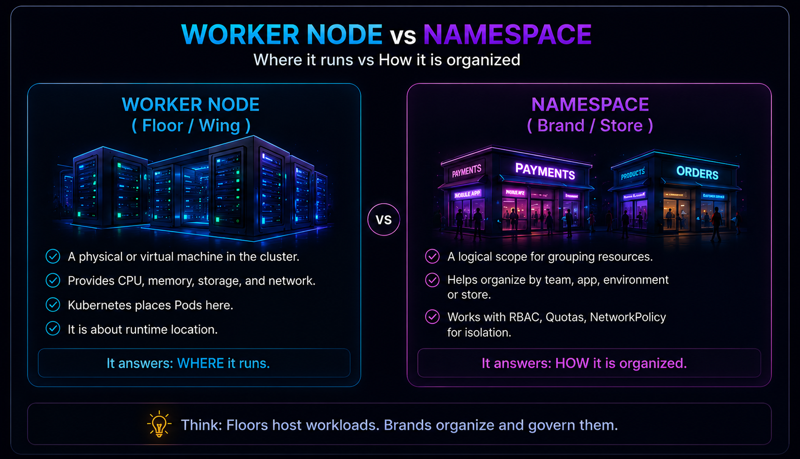
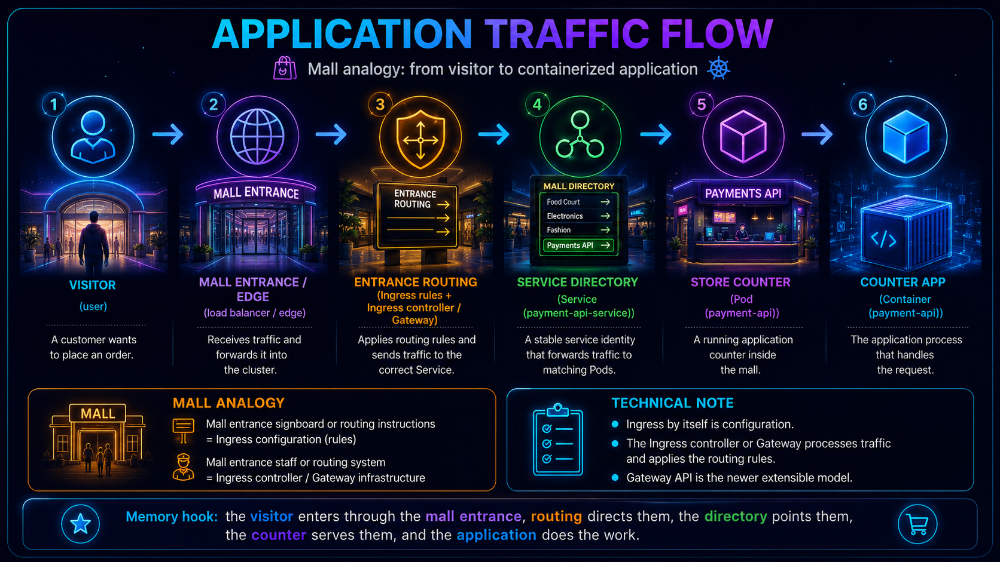
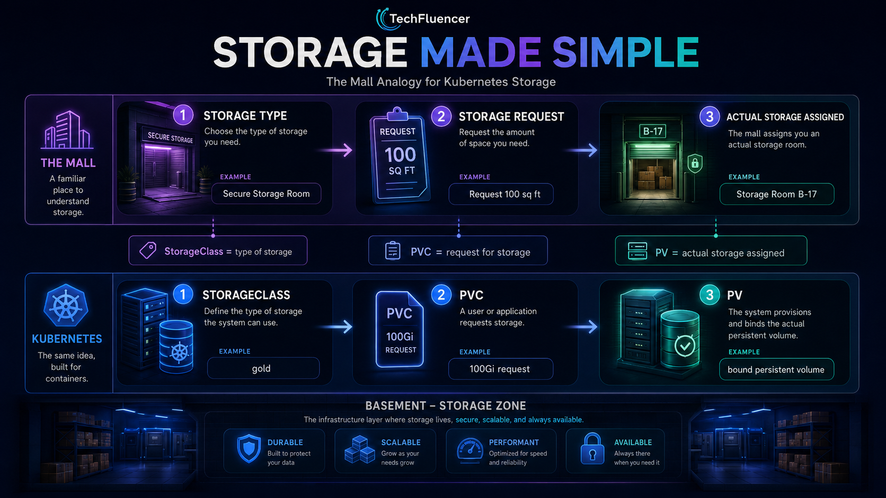
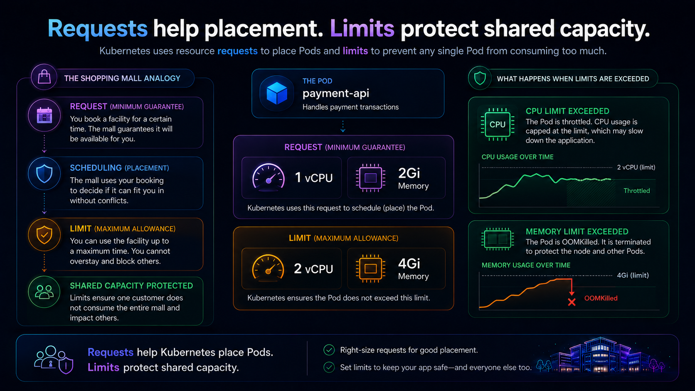

01 · Why this mental model
There are many Kubernetes tutorials. This one is about memory.
There are already many excellent articles, videos and training materials on Kubernetes. This article is not trying to say something completely new. Instead, it explains Kubernetes in a way that is easier to remember.
When I learn something complex, I like to create a mental map. A mental map helps me connect concepts together instead of memorizing them as separate definitions. Kubernetes has many terms: control plane, worker node, Namespace, Pod, Deployment, Service, Ingress, StorageClass, PVC, PV, NetworkPolicy, requests and limits.
Each term is manageable by itself. The challenge is connecting them. So for this article, let us use one simple mental model: Kubernetes is like a smart shopping mall.
The shopping mall mental model connects those objects into one operating story. The cluster is the mall ecosystem. The control plane is the management office. Worker nodes are floors or wings. Namespaces are logical brand, team or application scopes. Pods are individual store instances. Containers are packaged application processes running inside those Pods.
A Kubernetes Namespace does not inherently prove business ownership or provide strong tenant isolation. Organisations commonly align Namespaces with teams, applications, environments or tenants, then apply RBAC, quotas, NetworkPolicy and security controls around them.
| Kubernetes concept | Mall memory hook | Technically precise interpretation |
|---|---|---|
| Cluster | Entire mall ecosystem | The control plane and worker nodes that together run and manage workloads. |
| Control plane | Management office | Accepts desired state, stores API data, schedules Pods and runs reconciliation loops. |
| Worker node | Floor or wing | The compute location where Pods actually run. |
| Namespace | Brand, team or application scope | A logical scope for grouping and naming namespaced resources. |
| Pod | Individual store instance | The smallest deployable unit; it contains one or more tightly coupled containers. |
| Container | Packaged application process inside the store | An isolated runtime for application code and its dependencies inside a Pod. |
02 · Kubernetes architecture
The cluster is the mall ecosystem. The control plane operates it.
A Kubernetes cluster consists of a control plane and worker nodes. Users and automation submit desired state through the Kubernetes API. The control plane records that state, selects suitable nodes for unscheduled Pods and runs controllers that continuously reconcile actual state toward desired state.
- API server = management reception desk: all Kubernetes API requests and administrative instructions enter through it. Application traffic does not.
- etcd = official records: the consistent key-value store used for Kubernetes API data.
- Scheduler = space-allocation team: assigns unscheduled Pods to suitable worker nodes.
- Controller manager = operations supervisors: runs control loops that reconcile observed and desired state.
The control plane does not invent business intent. The desired number of replicas, Pod template and policy are declared by users or higher-level automation; Kubernetes works to realise that declaration.
03 · Worker node vs Namespace
Worker node is where it runs. Namespace is the logical scope in which it is organised.

Suppose a company has Payments, Risk and Reporting teams. Their resources may be grouped into separate Namespaces. The Pods from each Namespace can run on many nodes, and a single node can host Pods from several Namespaces.
Memory hook: worker node equals runtime location; Namespace equals logical resource scope. Ownership, access and isolation come from the way the platform applies RBAC, quotas, policies and security controls.
04 · Deployments, ReplicaSets, Pods and containers
The operating plan creates and maintains the stores where the application runs.
In the mall, the business team does not manually create and watch every store instance. It defines an operating plan: how many stores should be open, what setup each store should use, and how changes should be introduced. In Kubernetes, that operating plan is the Deployment.
A Deployment declares the desired state and rollout strategy for a set of application Pods.
The Deployment manages ReplicaSets. A ReplicaSet is like the mall operations team that continuously works to maintain the requested number of store instances.
If a Deployment specifies replicas: 3, the desired state is three Pod replicas. That does not guarantee that exactly three are ready at every instant: startup, failure and rolling-update conditions can temporarily produce different desired, current, ready and available counts.
A Pod is the smallest deployable unit that Kubernetes can create and manage. In the mall analogy, each Pod is an individual store instance. Most application Pods contain one main container, but a Pod can contain multiple tightly coupled containers that share networking and storage context.
A container is the packaged application process running inside the Pod, together with its runtime dependencies.
- Deployment = store operating plan.
- ReplicaSet = mall operations team maintaining the required store count.
- Pod = individual store instance.
- Container = packaged application process running inside the store.
05 · Services, Ingress and Gateway
Use a stable directory entry, not a temporary Pod address.
Pods can be replaced and their IP addresses can change. A Service provides a stable network identity for a logical set of backends, commonly selected Pods.

A request typically reaches a load balancer, then an Ingress controller or Gateway implementation. Routing configuration selects a Service, and the Service directs traffic toward one of its current backend Pods. The application process inside the selected Pod handles the request.
Ingress contains the routing rules. An Ingress controller reads those rules and handles the traffic. Gateway API is the newer, more flexible approach for many external traffic-routing use cases.
06 · Storage fundamentals
The store requests storage; the mall fulfils it using an agreed storage class.
A mall tenant may need storage space for stock, equipment or records. The mall first defines the available storage categories and fulfilment rules. The tenant submits a request, and the mall allocates a suitable storage space. Kubernetes follows a similar pattern.
- StorageClass = storage fulfilment catalogue and provisioning rules.
- PersistentVolumeClaim (PVC) = the store's storage request.
- PersistentVolume (PV) = the Kubernetes object representing the allocated storage.
- Backing volume = the actual storage asset supplied by the storage system.

A PersistentVolumeClaim expresses the workload's storage request, such as required capacity and access mode. A StorageClass can describe how a class of storage should be dynamically provisioned and managed. A PersistentVolume is the Kubernetes object representing the resulting storage capacity.
With dynamic provisioning, a PVC can trigger a provisioner, guided by a StorageClass, to create a backing volume and corresponding PV. Static provisioning remains possible when storage and PV objects are prepared in advance.
07 · NetworkPolicy
NetworkPolicy is the mall's access-control plan for communication between stores.
A mall does not allow every visitor or employee to enter every area. Customers can enter public stores, delivery staff can use loading areas, and only authorised staff can access restricted rooms. NetworkPolicy applies a similar idea to Pod-to-Pod communication.
- NetworkPolicy = mall access-control rules for which stores may communicate.
- Pod selectors = the stores to which the rule applies.
- Ingress and egress rules = the permitted incoming and outgoing paths.
NetworkPolicy objects describe permitted ingress and egress traffic for selected Pods at IP and port level. For example, a policy can permit frontend Pods to reach backend Pods while preventing direct frontend access to database Pods.
The cluster networking implementation must support and enforce NetworkPolicy. Creating a NetworkPolicy object in a cluster whose network plugin does not enforce it does not create effective isolation.
08 · Resource requests and limits
Requests help the mall place the store. Limits constrain what it may consume.
Before a store opens, mall management needs to know the minimum space, power and facilities it requires. That is the request used for planning and placement. The mall may also define the maximum capacity the store is allowed to consume. That is the limit.
- Request = the capacity signal used to decide where the Pod can be placed.
- Limit = the maximum runtime allowance configured for the container.

In the example, a container requests 1 CPU and 2 GiB of memory. Kubernetes uses the Pod's effective resource request when selecting a node with sufficient allocatable capacity. One Kubernetes CPU unit may map to a virtual core, physical core or hardware thread depending on the node.
CPU use above a limit can be throttled. Memory enforcement is reactive: if a container exceeds its memory limit and the operating system encounters memory pressure, the container may be terminated and reported as OOMKilled. Restart behaviour follows the Pod's restart policy.
09 · Configuration, Secrets and probes
Every store needs instructions, protected credentials and opening checks.
A mall store needs operating instructions, restricted credentials and checks that confirm whether it is ready and functioning. Kubernetes separates those concerns into ConfigMaps, Secrets and probes.
- ConfigMap = the store's operating instructions and notice board.
- Secret = a restricted credential locker.
- Readiness probe = is the store ready to serve customers?
- Liveness probe = is the store still functioning?
- Startup probe = has the store finished opening?
ConfigMaps hold non-confidential configuration such as endpoints, feature flags and environment-specific settings. Secrets are intended for confidential values, but creating a Secret does not automatically guarantee strong protection. Security depends on RBAC, encryption at rest, access controls and operational configuration.
A readiness probe asks whether the application can serve traffic now. A failed readiness probe removes the Pod from matching Service endpoints without necessarily restarting the container. A liveness probe detects a stuck or unhealthy process; repeated liveness failure causes the kubelet to restart the affected container. A startup probe can protect slow-starting applications during initialisation.
10 · Hands-on example
Read the YAML like a mall operating plan.
apiVersion: v1
kind: Namespace
metadata:
name: payments
---
apiVersion: apps/v1
kind: Deployment
metadata:
name: payment-api
namespace: payments
spec:
replicas: 3
selector:
matchLabels:
app.kubernetes.io/name: payment-api
template:
metadata:
labels:
app.kubernetes.io/name: payment-api
app.kubernetes.io/part-of: payments
spec:
containers:
- name: payment-api-demo
image: nginx:1.27-alpine
ports:
- containerPort: 80
resources:
requests:
cpu: "1"
memory: "2Gi"
limits:
cpu: "2"
memory: "4Gi"
---
apiVersion: v1
kind: Service
metadata:
name: payment-api-service
namespace: payments
spec:
type: ClusterIP
selector:
app.kubernetes.io/name: payment-api
ports:
- port: 80
targetPort: 80This uses a pinned NGINX image as a placeholder web application. The containerPort documents the application port; it does not independently expose the workload.
- Namespace
payments= the logical scope used to organise and govern Payments resources. - Deployment
payment-api= the store operating plan for the application Pods. replicas: 3= request a desired state of three store instances.- ReplicaSet = the behind-the-scenes controller that works to maintain the requested Pod count.
- Pod = each individual store instance.
- Container
payment-api-demo= the packaged demo application process inside each Pod. - Service
payment-api-service= the stable ClusterIP and DNS identity that directs traffic to selected Pods.
11 · Knowledge reinforcement
Test the mental model.
1. Which statement best explains the difference between a Worker Node and a Namespace?
- A Worker Node is where Pods run. A Namespace logically groups and names resources.
2. What does a Deployment manage to maintain the requested number of Pods?
- A Deployment manages ReplicaSets, and ReplicaSets work to maintain the requested Pod replicas.
3. Why do we use a Service in Kubernetes?
- Pods may be replaced and their IP addresses can change. A Service provides a stable network identity.
4. What is the role of a StorageClass in dynamic provisioning?
- A StorageClass defines how a class of storage should be provisioned and managed.
5. Which statement correctly describes CPU and memory limits?
- CPU usage above the limit can be throttled. Memory-limit violations may cause the container to be terminated as OOMKilled.
12 · Architecture challenge
Design the mall for Payments, Risk and Reporting.
- Would separate Namespaces improve organisation and policy application?
- Which stateless applications should use Deployments?
- Which applications require Services or external routing?
- Which workloads need persistent storage and PVCs?
- Which NetworkPolicies should control east-west traffic?
- What requests and limits should be based on observed usage?
- Which responsibilities belong to the platform team and which to application teams?
13 · Key takeaways
The mental model is memorable when its boundaries are explicit.
- A cluster combines a control plane and worker nodes.
- The control plane reconciles declared desired state; it does not invent business intent.
- Worker nodes are runtime locations. Namespaces are logical scopes for grouping and naming resources.
- A Pod is the smallest deployable unit and can contain one or more tightly coupled containers.
- A Deployment manages ReplicaSets; ReplicaSets work to maintain requested Pod replicas.
- A Service provides stable access to changing backend Pods.
- Ingress routing rules require an implementation such as an Ingress controller.
- PVCs request storage, PVs represent storage and StorageClasses can guide dynamic provisioning.
- NetworkPolicy requires an enforcing network implementation.
- CPU limits can throttle; memory-limit violations may result in OOM termination.
- Secrets require proper encryption, RBAC and operational controls.
VKS builds on Kubernetes concepts rather than replacing them. Supervisor, VCF Namespaces, workload clusters, VKr, storage policies and NSX or VDS networking should be understood by mapping them back to the upstream Kubernetes foundations.